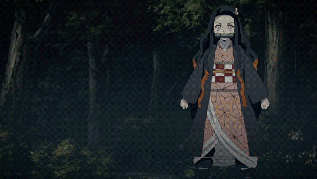
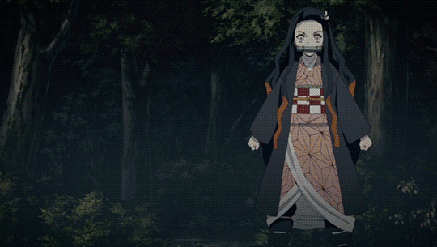
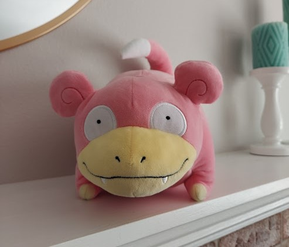
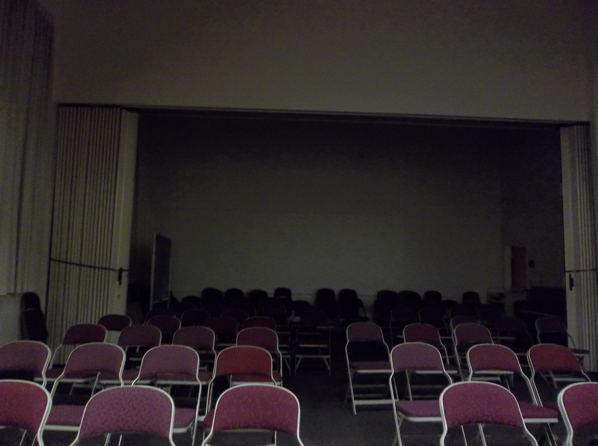
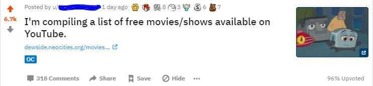

Welcome to Dewside
Log of Eliwood's Thoughts

10:30 am; june 12, 2021 (saturday)
visited the great plains this week! it was pretty cool out there, but i'm glad to be home now.i have a job interview at 2 today, wish me luck!
i'm thinking about making a zenitsu shrine, lol. also, i need to wipe this page but i am having a hard time bringing myself to do it because i really like the posts from this time around
12:00 pm; june 2, 2021 (wednesday)
i would like to update more. someone please email me to update more.long story short, i spoke at my high school graduation, my grandparents came down, i partied 'til 6 am, i had a tap recital, i've worked on my commission, i've worked on my grima puppet (the head is part-way done! remind me to post pics), and i'm concepting a manga-esque comic about the wild west... with swords
btw? demon slayer has now CONSUMED my life, it was amazing, the movie was mind blowing, and i'm buying the manga as soon as humanly possible
10:35 pm; may 13, 2021 (thursday)
well gang, it's been quite a while. i've had the highest of highs and the lowest of lows this last week, but a lot of it is more personal than i wish to share. just know that the words you're reading were typed by a very proud 18-year-old college graduate!in other news, i recently started watching Demon Slayer and I. Am. OBSESSED. i'll make a whole post about it when i finish the series, but holy hell is it engaging and fun to watch. i want to legally adopt zenitsu i adore him. my son....
 

5:03 pm; may 5, 2021 (wednesday)
i'm really glad that the furry fandom is starting to talk about its history more. this information used to be a lot harder to come by, so it's great that things like the "the fandom" film are bringing attention to it. it's fascinating the way that the early science fiction fandom gave birth to the model of fandom we know today, and the fact that furries are responsible for popularizing anime in the U.S. is continually insane for me to think about.anyways, i would love to visit the prancing skiltaire someday
6:54 pm; may 3, 2021 (monday)
LOOK AT MY SLOWPOKE LOOK HOW PERFECT SHE IS
9:46 pm; april 23, 2021 (friday)
i got nothing out of this philosophy class other than a semester-long character arc about my battle against immanuel kant12:42 pm; april 20, 2021 (tuesday)
gonna make a proper page for this all later, but i'm writing this down here for memory:videos i want to make:
-the fire emblem iceberg explained
-the rise and fall of studio c
-historia of amalthea
6:22 pm; april 19, 2021 (monday)
the rise and fall of studio c: an impromptu essaynot to be nostalgic on main (i always am), but i heard the studio c theme today and my heart just stopped. studio c was such an important piece of my childhood from when i was 11-13, which doesn't sound like a long time, but it left a huge impact on me. I loved having something my parents would let me watch on sunday when they were feeling stricter, and something that i felt connected to. i still adore their earlier seasons to this day, and rewatching an old sketch is always a fun romp through a simplier time for me, back when i was more sure of my place in the world.
if you didn't Grow Up Mormon, you likely don't have any idea what i'm talking about, so i'll divulge. studio c is a sketch comedy show produced by byutv. it made its debut in 2012, and is still currently running today on season 13. the original cast was made of 10 members, all of which retired from the show in 2018. the original cast were replaced in a move that would ultimately split the viewerbase and kill a lot of interest in the show. i, for one, stopped watching entirely when this occurred, although i had already been steadily losing interest in the show for seasons beforehand.
although studio c was airing on byutv, they were also posting their bits individually to youtube. they found moderate sucess there as well, but things hit a boiling point when the season 5 sketch "top soccer shootout with scott sterling" went viral (as of writing this, it is sitting at 81 million views). following their boom in popularity, their target seemingly shifted to their youtube audience and a change in tone is visible around this time, in both their content, and the way the videos are presented (more clickbaity).
although i have MUCH more to say on them, this is all the time i have. i think that i'll make a full-on video detailing this story soon, since there's a lot more that needs to be said on them.
10:02 pm; april 13, 2021 (tuesday)
NOOOO KOSHKA CHANGED THEIR COMMISSION PRICES:(((
i'm gonna be putting them on the backseat of my possible maker line up, since the prices before I thought made up for the other things I didn't love about their work. they are improving, it makes sense for them to do, but it kills them as my top choice. RIP
5:41 pm; april 13, 2021 (tuesday)
i got my graduation regalia yesterday, and it feels so REAL all of a sudden. like, this overwhelming goal i've been working towards actually exists, and i'm so close to achieving it.weird to think that i'll be an 18 year old university alumni
7:34 pm; april 11, 2021 (sunday)
not doing so hot today. i feel like i'm gonna pass out, my head is faint and i can't focus... i wanna bash it on something.... i can't wait to move out10:43 pm; april 10, 2021 (saturday)
i bought some earrings that i really like this week. i feel happy with how they look. i keep getting complimented on how i'm doing my hair. i think maybe i'm starting to understand11:11 am; april 2, 2021 (friday)
cool cat saves the kids reviews will never not be funnyin other youtube news, internet historian put up a new video on the incognito mode channel!
9:21 pm; march 29, 2021 (monday)
Okay. I don't really like to get serious on here, but I need this to be said.
"Cult" is not a funny word. It's not a word you should call your friend group, it's not a word you should call a fan base, and it's not a word you should call your Discord server.
Cults are not some otherwordly mystical beast. They are not the grandiose horror film and campfire story depictions of blood sacrifice or chanting in circles, at least not most of them, and not in ways that you would expect.
Cults are sneaky. They make their control seem healthy to the people they draw in, and condition their victims to believe that the rituals they take place in are normal, and nothing out of the ordinary. Cults want your time, your money, and your family. Cults teach you that they are the only right way to live. They engulf you. They convice you that any other way of life, any attempts to leave, will result in misery, damnation, and hell.
Cults are very real. It is more likely than you think that a person you know is involved in a cult. It is more likely than you think that someone who know has been hurt by a cult. It is more likely than you know that a friend of yours was raised in a cult.
Cults are not a joke. They are not funny, your aesthetic, or something that you should make light of if you are ill-informed of their reality. I am begging you, whoever you are, to stop treating cults like a joke. Stop saying things that erase the suffering of cult surviors.
4:24 pm; march 29, 2021 (monday)
people be like "i enjoy obscure animation" and then talk about studio ghibli1:15 pm; march 28, 2021 (sunday)
how do we as a society just ignore the fact that there is a magic tree house anime? why are we all collectively overlooking this?10:07 pm; march 27, 2021 (saturday)
okay, to fill anyone who might be curious in on what went down yesterday:i was working on my YouTube movies page and decided to make a post about it on r/InternetIsBeautiful. I figured that since I was putting quite a bit of time into the page, I might as well advertise it a little incase anyone else was in need of the list. What I didn't expect was for the post to ABSOLUTELY BLOW UP.
 holy shit.
as i'm writing this, the post is sitting at over 6,700 upvotes, and 27 awards. that's INSANE. i wanted at most a few hundred people to see the post, but they just kept on coming. people were throwing more YouTube links at me left and right, and it's going to take days for me to sort through all of them. the reaction to this post was something i NEVER could have seen coming.
i was starting to get complaints, too. the mobile version of Dewside as of yesterday was the same as the desktop, and you had to zoom in and out quite a bit to navigate (it was pretty suboptimal). this seemed to be a large issue for a lot of people, and i was getting pretty overwhelmed by these comments-- as i said, i really only wanted a small audience in the first place.
it was late yesterday afternoon that i met my savior, a Reddit user aptly named u/simplemiracles, who supplied me with a block of css code that could optimize my site for mobile. it worked wonders, and i am unbelievable grateful for that help. now, if you minimize your browser window, you'll see the alternate version!
if you're here from reddit, welcome! i'm glad to have you here, and i hope you enjoy your stay as Dewside fades back into its own little corner of the web.
5:49 pm; march 26, 2021 (friday)

this is terrifying. get off mobile, i'm begging you all
10:01 am; march 26, 2021 (friday)
OH MY GOD, MY PROFESSOR WAS IN WALKING WITH DINOSAURS?????8:08 am; march 26, 2021 (friday)
sitting in my prehistoric life class, painstakingly explaining to my 70 year old professor how to turn on a youtube video10:55 am; march 25, 2021 (thursday)
it's so easy to please me with botw zelink fics..... the author says "they become caring best friends but are too afraid to show their real feelings due to societal expectations" and i go "omg..... they become caring best friends but are too afraid to show their real feelings due to societal expectations..."